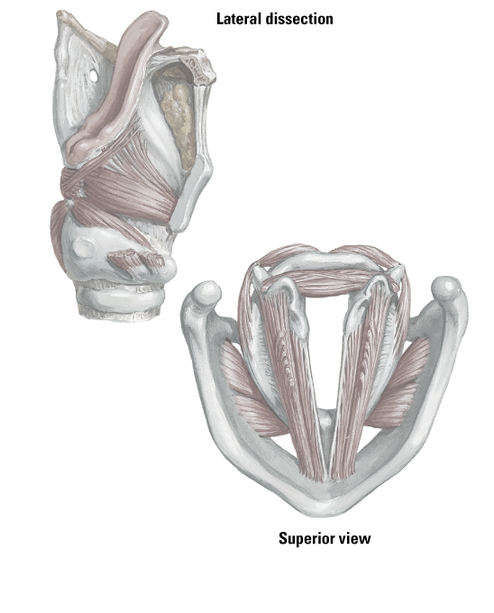

Aryepiglottic part of oblique arytenoid muscle
Posterior cricoarytenoid muscle
Thyroepiglottic part of thyroarytenoid muscle
External part of thyroarytenoid muscle
Lateral cricoarytenoid muscle
Vocalis muscle
Vocal ligament
Conus elasticus
Thyroid articular surface
Lamina of cricoid cartilage
1
2
3
4
5
6
7
8
9
10